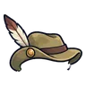

ไดโนจิ๋วจ่าฝูง
มอนธาตุดิน Lv 74–98
เจอที่
| แมพ | โซน | Lv | ในแมพ | ภูมิภาค |
|---|---|---|---|---|
| หุบเฟิร์นยักษ์ | 74–92 | ≈11 | ที่ราบสูง | |
| ทะเลสาบไข่มังกร | ฝั่งรังมังกร | 90–98 | ≈11 | ที่ราบสูง |
| หาดซากแอมโมไนต์ | เปลือกหอยยักษ์ | 90–98 | ≈8 | ที่ราบสูง |
| ผารังเทอโรซอร์ | เสาหินรังยักษ์ | 90–98 | ≈8 | ที่ราบสูง |
| ป่ายางอำพัน | ต้นอำพันยักษ์ | 90–98 | ≈8 | ที่ราบสูง |
≈ จำนวนที่อยู่ในแมพพร้อมกันโดยเฉลี่ย คิดจากไฟล์เกม (จุดเกิดของแมพ × 4 แบ่งตามสัดส่วนของแต่ละตัว) ตายแล้วเกิดใหม่ที่เดิมใน 22 วินาที · ตอนเล่นออนไลน์เซิร์ฟเวอร์เป็นคนเกิดมอน อาจไม่ตรง
ค่าสถานะตามเลเวล
| Lv | HP | ATK | DEF | MDEF | EXP | Job |
|---|---|---|---|---|---|---|
| 74 | 49,178 | 171–257 | 33 | 11 | 127 | 95 |
| 86 | 76,952 | 206–310 | 38 | 13 | 146 | 110 |
| 98 | 110,454 | 254–380 | 43 | 15 | 164 | 123 |
ตีด้วยธาตุไหนดี
แรงขึ้น: ไฟ ×1.5 พิษ ×1.25
เบาลง: ลม ×0.5 ดิน ×0.25
วัตถุดิบที่ดรอป
| ของ | โอกาส | |
|---|---|---|
| กรงเล็บไดโนจิ๋ว | 55% | 1 ชิ้น (15% ได้ 2) |
อุปกรณ์ที่ดรอป (11)
| ของ | โอกาส |
|---|---|
| 0.25% | |
| เกราะเต่าโบราณ (เกราะอก) | 0.15% |
| เกราะเต่าโบราณ (สนับขา + รองเท้าเกราะ) | 0.15% |
| ชุดนกไฟอมตะ (เสื้อ) | 0.15% |
| ชุดนกไฟอมตะ (กางเกง + รองเท้า) | 0.15% |
| 0.12% | |
 หมวกทหารพรานปีกพับ | 0.08% |
| 0.06% | |
| 0.06% | |
| เกราะเต่าโบราณ (เครื่องรางกระดองเต่า) | 0.05% |
| ชุดนกไฟอมตะ (ขนนกไฟ) | 0.05% |
สกิล
หอนเรียกฝูง (Lv 25+) · หอนเรียกฝูง (Lv 60+) · กระโจน (Lv 60+)